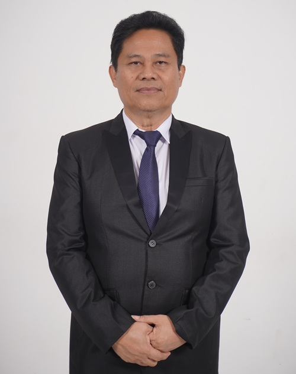
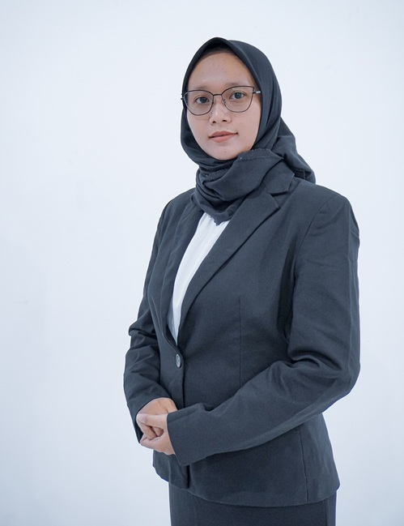
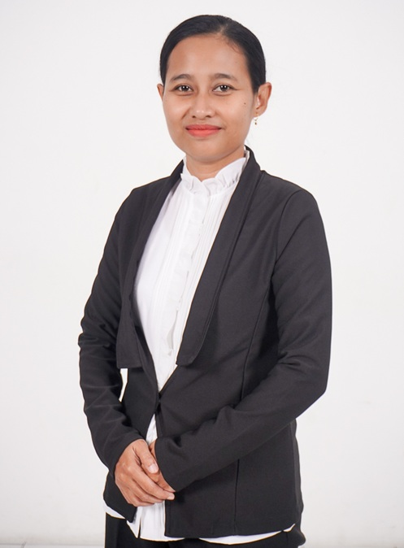
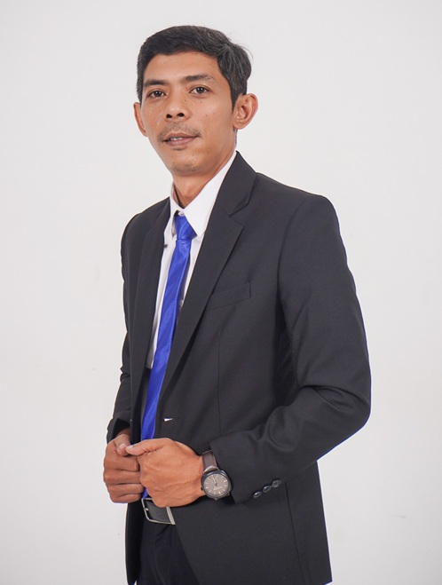

Mengenal lebih dekat
Profil Fakultas

2022
Tahun Berdiri
3
Program Studi
10+
Prospek Karir
Ketika ilmu bertemu karakter, masa depan menjadi tak terbatas.
Fakultas Sains dan Teknologi Universitas Pignatelli Triputra (FST Upitra) merupakan fakultas baru yang didirikan pada proses alih bentuk atau penggabungan dari STIE Pignatelli Surakarta dan ABA Pignatelli Surakarta. Berdasarkan SK Nomor 3884/E1/HK.03.00/2022, kedua perguruan tinggi tersebut telah berubah bentuk menjadi Universitas Pignatelli Triputra.
Program Studi yang ada di FST Upitra adalah Program Studi Sistem Informasi (S1), Program Studi Informatika (S1), dan Program Studi Rekayasa Perangkat Lunak (S1). Lulusan diharapkan dapat berkarir sebagai Project Manager, Web Programmer, System Analyst, Software Tester, IT Trainer, Game/Multimedia Developer, IT Consultant, Perbankan, Technopreneur, Akademisi, dan Researcher.
Kami menyediakan tiga program studi unggulan di bidang sains dan teknologi

Sistem Informasi
Merancang sistem yang membantu organisasi bekerja lebih efisien dan terarah.

Mawar Hardiyanti, S.Kom, M.Kom
Ka. Prodi

Informatika
Mempelajari logika komputasi, AI, dan pengembangan teknologi inovatif.

Endang Anggiratih, ST, M.Cs
Ka. Prodi

Software Engineering
Merancang dan membangun perangkat lunak berkualitas tinggi sesuai standar industri.

Tutus Praningki, S.Kom, M.Kom
Ka. Prodi
Kenali para penggerak FST Upitra.

Drs. Djymoon Hidayat, M.S., M.A., Ph.D
Dekan

Mawar Hardiyanti, S.Kom, M.Kom
Ka. Prodi Sistem Informasi

Endang Anggiratih, ST, M.Cs
Ka. Prodi Informatika

Tutus Praningki, S.Kom, M.Kom
Ka. Prodi Rekayasa Perangkat Lunak
Fakultas yang unggul pada tingkat global dalam mengelola bidang ilmu komputer.
Berorientasi global, menjunjung tinggi nilai-nilai integritas dan bersemangat kebhinekaan untuk berkontribusi nyata bagi pembangunan masyarakat Indonesia yang semakin bermartabat.
Menyelenggarakan pendidikan transformatif dalam bidang sains dan teknologi untuk menghasilkan lulusan yang memiliki kedalaman spiritual, kemanusiaan, intelektual, profesionalitas, dan ramah lingkungan sesuai kebutuhan masyarakat dan industri.
Menyelenggarakan penelitian di bidang sains dan teknologi yang kreatif, inovatif, dan relevan dengan kebutuhan masyarakat dan industri serta berdampak transformatif bagi masyarakat.
Menyelenggarakan pengabdian pada masyarakat sebagai bentuk pemberdayaan sains dan teknologi yang memberikan kontribusi transformatif bagi masyarakat.
Menjalin kerjasama dengan masyarakat, institusi, dan lembaga pemerintah maupun swasta untuk meningkatkan mutu kegiatan tri dharma perguruan tinggi.
Menyelenggarakan dan mengembangkan tata kelola fakultas modern, berkualitas dan kondusif untuk mewujudkan pendidikan sains dan teknologi yang transformatif.
Arah dan komitmen FST Upitra dalam membentuk generasi unggul.
Menghasilkan lulusan yang dapat berelasi dengan pihak industri dan dunia usaha disertai semangat spiritualitas dan memiliki kerendahan hati dalam melayani, serta dapat beradaptasi dan bertransformasi dalam ilmu pengetahuan dan teknologi.
Berkontribusi dalam memperluas akses pendidikan tinggi bagi masyarakat di bidang Informatika, Sistem Informasi, dan Rekayasa Perangkat Lunak.
Turut berkontribusi dalam mencerdaskan kehidupan bangsa, memupuk rasa kesatuan dan persatuan bangsa yang dilandasi nilai-nilai Pancasila, etika akademis, moral, iman, dan takwa kepada Tuhan Yang Maha Esa.
Memberikan kontribusi yang berkualitas dalam pengembangan ilmu pengetahuan dan teknologi di bidang penelitian dan pengabdian masyarakat yang berdampak transformatif bagi masyarakat.
Mengembangkan relasi dengan industri, dunia usaha, masyarakat, lembaga institusi pendidikan, pemerintah, non pemerintah pada tingkat regional, nasional, maupun internasional yang dilandasi etika akademik, manfaat, dan saling menguntungkan.
FST Upitra adalah tempat bertumbuh dan berinovasi.
Kami hadir dengan pendidikan transformatif yang membekali mahasiswa dengan ilmu, karakter, dan semangat untuk berkontribusi nyata bagi masyarakat.
Integrity & Ethics
Menjalani hidup dengan transparan dan jujur.

Excellence
Menghasilkan karya yang lebih dari yang diharapkan dalam situasi apapun.

Compassion
Menempatkan kemanusiaan dan tujuan yang lebih mulia di atas kepentingan pribadi.

Humility
Menjadi pribadi yang rendah hati, membuka diri, dan terus memperbaiki diri.